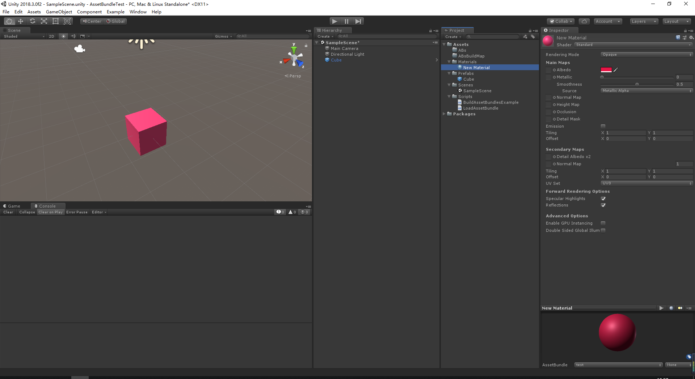
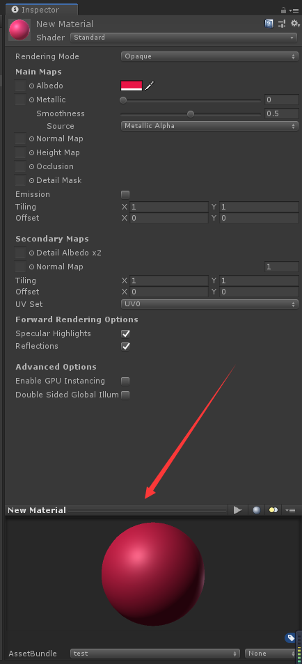
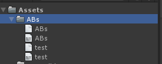

一个开头快速功能迭代开发的游戏，直到中后期才萌生热更新的需求，而在Unity里做资源热更（AssetBundle）和代码热更（Lua）是一个不小的工作，需要耗费相当多的精力。
怎么办？。
相信大家对于游戏的热更新都有了一定的概念，但是AssetBundle究竟是什么东西？和Resource的加载方式有什么不一样呢？
介绍
AssetBundles是Unity编辑器中在编辑过程中创建的一些文件，这些文件可以在项目运行环境中使用。AssetBundles可以包含的资源文件比如模型，材质，贴图和场景等等，注意：AssetBundles不能包含脚本!
具体来说，一个AssetBundle就是把资源或者场景以某种方式紧密集合在一起的一个文件。这个AssetBundle文件可以被单独加载到unity应用程序中。这允许模型、贴图、音效设置很大的场景这些资源进行流式加载或者异步加载。当然AssetBundle文件也可以本地缓存这样能够在程序启动的时候立马被加载出来。但AssetBundle技术主要目的就是需要的时候从远程服务器下载需要的资源。AssetBundle可以包含任何unity可识别的资源文件，甚至包括二进制文件。但就是不能包含脚本文件。
在Resource模式中，开发者是几乎完全不用操心他们的资源管理的技术细节。直接使用编辑器进行资源编辑，用完以后开发完以后直接打包最终程序就可以了。而Asset Bundle模式则需要自己进行资源的打包加载管理。在AssetBundle模式和Resource相比较之下，这个模式看上去就像后来迭代版本的时候加出来的一个功能——基于原有Resource模式的不足，提供一个对资源方式更自由控制的方式。
AssetBundle允许从本地或者远程服务器加载Assets资源，利用AssetBundle技术，Assets资源可以放在远程服务器上，这种技术增加了项目灵活性并且减少项目初始包的大小。
本文介绍AssetBundles并且讨论一步一步的介绍怎么样使用它，怎样将资源打包到AssetBundle中，如何通过AssetBundle来加载资源到游戏中。
AssetBundle资源打包
创建工程和资源
首先我们创建一个新工程并在里面创建出一个Material和Prefab资源，让Prefab资源引用Material。
整个项目的结构如图：

编写脚本
在Unity中打AssetBundle包很简单，只需要调用 BuildPipeline.BuildAssetBundles 方法就好了，但是要为想要导出的资源设置好 assetBundleName ，如果该资源没有被设置 assetBundleName，而且没有被设置了 assetBundleName 的资源所引用，那么Unity就不会打包该资源。那么如何在项目中设置 assetBundleName 呢？
首先在Project目录中选中想要导出的资源，在Inspector的最底下有个展示框，如果没有的话点住图中的label往上拉就可以看见了，如图中的前一格就是我们的 assetBundleName ，后面一格是我们的Asset Bundle Variant，目前不做介绍，先不设置，我们按图中的设置把Material和Prefab都设置assetBundleName为test。

BuildPipeline.BuildAssetBundles 有两种重载，我将会在代码中介绍他们的区别。
创建BuildAssetBundlesExample，代码如下：
1 | // Create an AssetBundle for Windows. |
当你创建了这个脚本后，你就可以通过项目中的Example下的选项来使用两种方法导出项目的资源了。
导出的资源分析
我们查看下第一种方式打包出来的assetbundle的资源。可以看到我们在Assets/ABs下有了四个文件。

我们可以注意到目录下有两个和文件夹名字一样的文件，打开ABs.manifest查看下信息。
1 | // ABs.manifest |
该文件为整个目录下的所有assetbundle的记录，它记录了每个assetbundle间的依赖情况和整个文件夹下的所有的assetbundle的信息，我们后面可以通过它来查找所需要加载的依赖。
1 | // test.manifest |
test.manifest下记录了该assetbundle下的所有asset和该assetbundle的依赖情况
加载资源
资源都在一个 assetbundle
比如第一种打包情况，我们将prefab和它所依赖的material都打包到test这个AssetBundle中，那么我们加载的时候就只需要加载这个assetbundle就好了，加载方式如下：
1 | using System.Collections; |
资源都不在同一个 assetbundle
第二种打包情况中我们把prefab分到了prefabbundle这个包中，然后它所引用的material则分到了materialbundle包中，所以我们加载的时候需要加载两个包。
1 | using System.Collections; |
我们也可以通过包的主文件来动态查询我们的依赖包的包名，并进行加载，代码如下：
1 | using System.Collections; |
加载服务器上的assetbundle
热更新中我们一般会把assetbundle部署到服务器上，Unity为我们封装了UnityWebRequest来加载。
1 | using System.Collections; |
以上就是主要的入门知识了，大家可以发现整个AssetBundle目前的方法其实是不全的，想要做到热更新的话我们还需要版本对比，然后我们最好能够手写一个资源回收方法来控制AssetBundle的Unload操作，这些我会放在下一章开始讲，当然Unity本身也有很多其它的可以异步的加载方式，比如LoadFromMemoryAsync之类的，大体都一样，可以自己去查看官方文档。